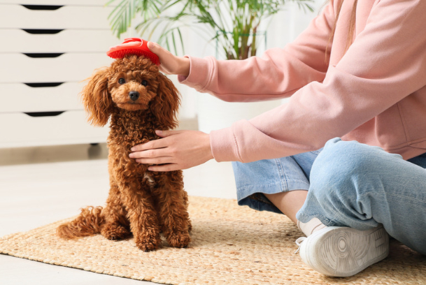

WEB & OPTIMIZACIÓN DE CONVERSIÓN
Cotizador de peluquería
Menos incertidumbre antes de reservar.


Resultados y aprendizajes
Prototipo funcional, sin métricas comerciales de producción. La precisión del precio depende de la evaluación y tarifas de cada sucursal.
El desafío
Para conocer el precio, muchos clientes debían consultar a intermediarios o acercarse con su perro sin saber el costo.
Mi participación
Detección de la fricción, diseño del flujo y desarrollo del cotizador en HTML, CSS y JavaScript.
La solución
La herramienta calcula un precio orientativo según sucursal, características de la mascota y servicios, y deriva al WhatsApp del local seleccionado.
Próxima etapa
Validar tarifarios y medir cotizaciones completadas, clics a WhatsApp y turnos confirmados.